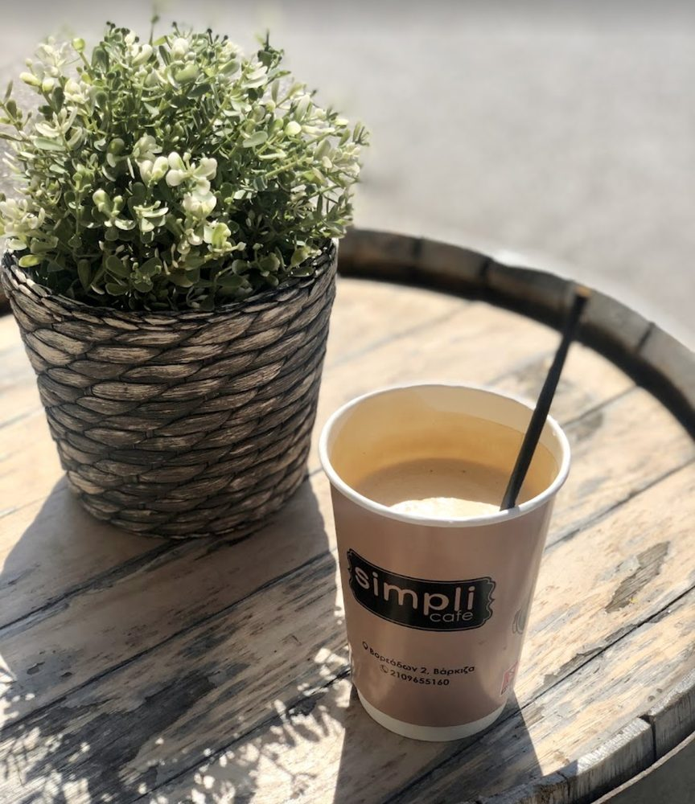

Καφές που αξίζει
Εσπρέσο καβουρδισμένος για εμάς στην Αττική και αλεσμένος τη στιγμή. Φρέντο, φίλτρου, flat white ή ελληνικός στο μπρίκι — όπως τον πίνεις.
Καφετέρια · Βάρκιζα
Εσπρέσο όπως πρέπει, φρέσκα σνακ κάθε πρωί και ένα σκαμπό στον ήλιο για να τα απολαύσεις. Τίποτα περίπλοκο — μόνο πράγματα φτιαγμένα σωστά.

Τι κάνουμε
Εσπρέσο καβουρδισμένος για εμάς στην Αττική και αλεσμένος τη στιγμή. Φρέντο, φίλτρου, flat white ή ελληνικός στο μπρίκι — όπως τον πίνεις.
Κρουασάν, κουλούρι, τυρόπιτα και ό,τι έβγαλε ο φούρνος το πρωί. Τοστ, σάντουιτς και γλυκά όλη μέρα.
Τραπεζάκια στο πεζοδρόμιο, wifi που δουλεύει και κανείς δεν σε βιάζει. Μείνε για έναν ή για όλο το απόγευμα.

Το Simpli Cafe φροντίζει να σερβίρει ποιοτικό καφέ, σνακ και ροφήματα όλη μέρα.
Yours Simpli!
Είμαστε εδώ από νωρίς το πρωί. Χωρίς κράτηση, χωρίς φασαρία — απλώς σπρώξε την πόρτα.